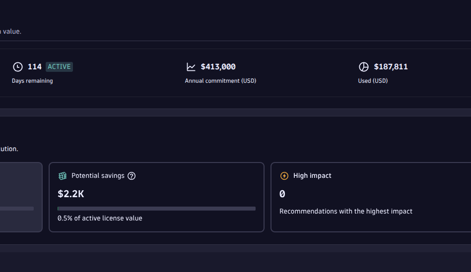
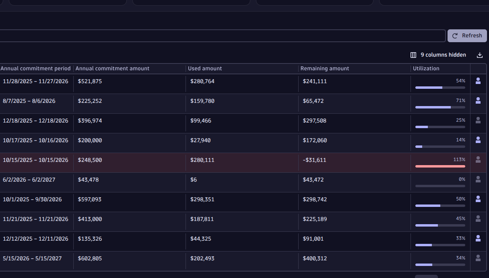
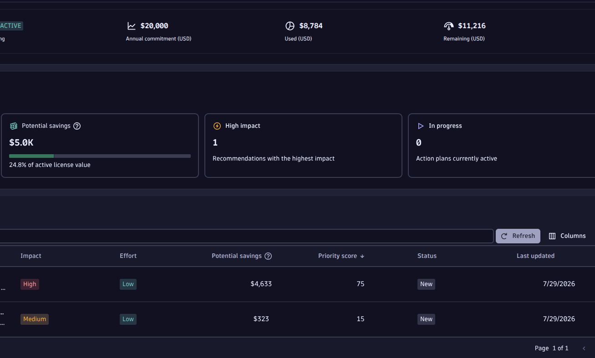

Recognised by Dynatrace


FinOps attributes every dollar of DPS spend by capability, account, and environment, forecasts where it's heading with confidence bands, and applies the fix directly inside your live Dynatrace tenant — no separate portal, no guesswork.


Drag to reveal the analysis behind every number.
DPS spreads cost across a dozen independently priced capabilities. Most teams discover the overrun when the invoice lands — with no idea which change would safely fix it.
FinOps attributes every dollar in real time, forecasts where it's heading, and applies the fix back into your tenant — in one click.

A full walkthrough, plus short focused clips of each key workflow.
Centralised visibility across every tenant. Workload-level attribution across hosts, applications, and environments — so you know exactly what drives spend.
Identify high-cost drivers, apply optimisation actions, and see the projected financial impact the moment you act — before and after, in one place.
Budget tracking, forecasting, threshold alerts, and automated workflows. Cost control that runs continuously — not a quarterly reporting exercise.
Continuous sync of subscription, cost, and usage data, broken down by capability — Full-Stack Monitoring, Kubernetes, RUM, Synthetic, Security, Logs, Business Events, and Davis AI.
Configurable time range up to a full year, live Dynatrace sync-status, budget donut, cost-by-capability breakdown, and CSV/report export.
Confidence-banded linear and Monte Carlo forecasting flags forecasts crossing 25/50/75/90% of budget, or predicted exhaustion, before it becomes an overage.
A built-in catalog proposes capability-specific actions — monitoring mode, namespace scoping, sampling, retention — scored by savings, impact, and effort.
Selected recommendations write configuration changes directly back into your live Dynatrace tenant, gated behind permissions and safety checks — no context switching.
Billed rates are checked against Dynatrace's official rate card, so pricing discrepancies don't go unnoticed.
FinOps reads every capability unit that drives your bill — across every tenant you operate.
| Capability | Metering unit | Typical cost driver | Coverage |
|---|---|---|---|
| Full-Stack Monitoring | GiB-hour / host | Instrumented hosts × memory class | ✓ |
| Infrastructure Monitoring | GiB-hour / host | Hosts without deep-stack agent | ✓ |
| Kubernetes Operations | Pod-hour | Monitored namespaces & pods | ✓ |
| Real User Monitoring | Sessions | Web & mobile user sessions | ✓ |
| Session Replay | Sessions captured | Replay-enabled user funnels | ✓ |
| Synthetic Monitoring | Actions | Scheduled browser & HTTP checks | ✓ |
| Application Security | Scan hours | Runtime vulnerability scanning | ✓ |
| Log Management | GiB ingested + queried | Log volume + DQL queries | ✓ |
| Business Events | Events ingested | Custom domain events pushed | ✓ |
| Davis AI | GiB scanned | Problem detection + root-cause analysis | ✓ |
Instrumented hosts × memory class
Hosts without deep-stack agent
Monitored namespaces & pods
Web & mobile user sessions
Replay-enabled user funnels
Scheduled browser & HTTP checks
Runtime vulnerability scanning
Log volume + DQL queries
Custom domain events pushed
Problem detection + root-cause analysis
Representative dimensions. FinOps tracks the full DPS capability set plus custom cost-attribution overlays.
Keycloak/OIDC authentication, fine-grained role- and permission-based access control, and an immutable audit log covering every sensitive action — from an applied Fix to a licence override.
Scoped access. OAuth2 client-credentials per account, secrets stored in Azure Key Vault, revocable at any time.
Isolated by design. Multi-tenant customer & environment separation — your data never touches another tenant's.
Auditable. Every sensitive mutation logged with actor, before/after diff, IP, and request ID.
Free trial in minutes, or talk to our FinOps team about your DPS footprint.
An AI teammate for your day-to-day Dynatrace operations.
Plain-language incident summaries from your Dynatrace problem feed.
Close the loop between Dynatrace and your ITSM stack — automatically.
Business-service views built on top of Smartscape topology.